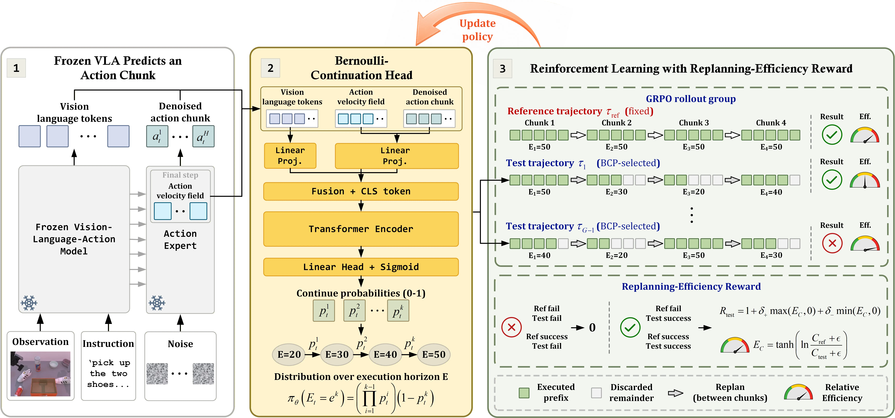
Our core idea is to replace fixed-horizon action-chunk execution with a lightweight Bernoulli-Continuation Policy that adaptively decides whether to continue or replan, aligning fresh observations with critical manipulation stages while preserving execution efficiency. Our contributions are summarized as follows:
|
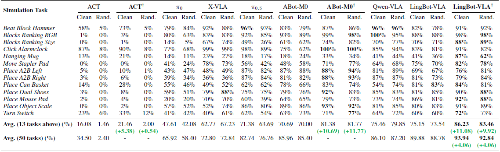 Success rate comparison on RoboTwin 2.0. The table lists 13 low-success tasks where the LingBot-VLA obtains below 90% success rate under the Clean setting, together with average results over all 50 tasks. († denotes the addition of BCP.) |
Key observations from the RoboTwin 2.0 results:
|
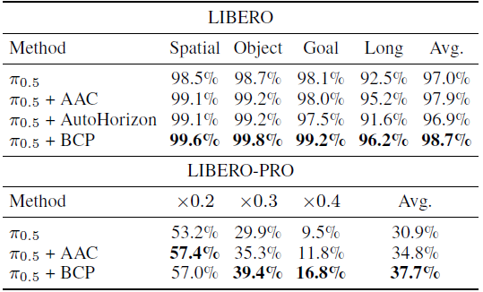 Success rates (%) of different execution strategies with π0.5 on LIBERO and LIBERO-PRO. |
Key observations from the LIBERO and LIBERO-PRO results:
We conduct a runtime-efficiency evaluation on all 50 RoboTwin 2.0 tasks under the Clean setting, measuring per-query inference time, VLA calls, executed control steps, and the estimated runtime.
|
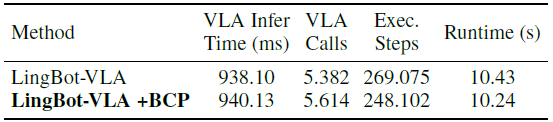 Runtime cost comparison on 50 RoboTwin 2.0 tasks under the Clean setting. |
We compare BCP with eight execution-horizon strategies built upon LingBot-VLA on all 50 RoboTwin 2.0 tasks under the Clean setting, evaluating their success-rate–runtime trade-off.
|
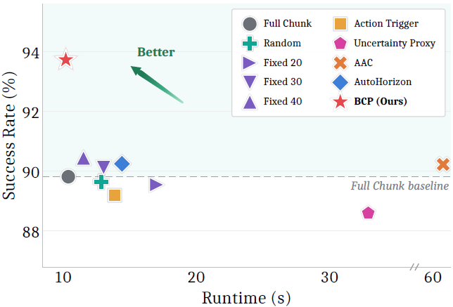 SR–runtime trade-off of execution-horizon strategies on 50 RoboTwin 2.0 tasks under the Clean setting. |
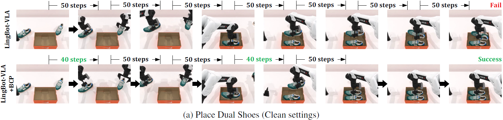
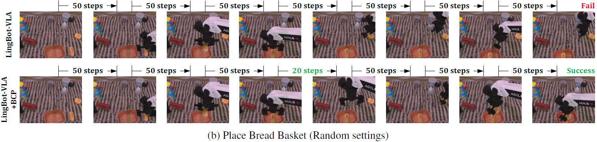
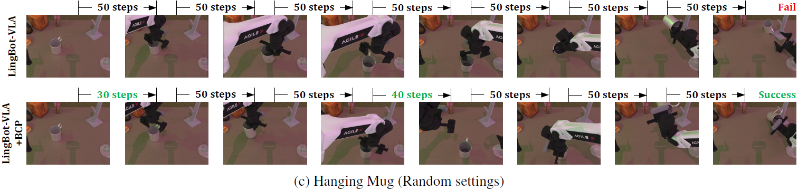
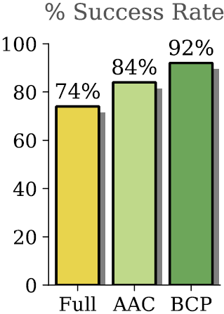
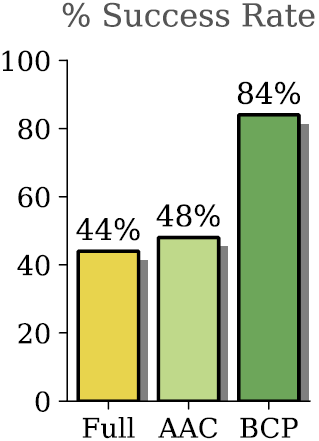
We conduct a joint ablation and runtime-efficiency analysis on the Hanging Mug under the Clean setting of RoboTwin 2.0.
|
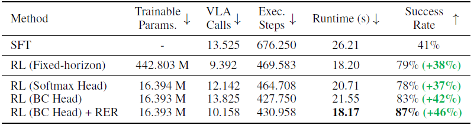 |
@article{xu2026continue,
title={Continue or Replan? Bernoulli-Continuation Policy Learning for Adaptive Horizon Execution},
author={Weichen Xu, Zhenhua Liu, Lin Luo, Yaobo Liang, Chengtang Yao, Qingyu Mei, Jian Cao, Xixin Cao, Xing Zhang, Jiaolong Yang, Baining Guo},
journal={arXiv preprint arXiv:2608.03483},
year={2026}
}